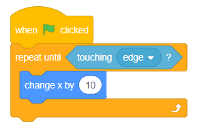
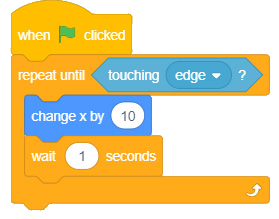

3. Add the condition to be met inside the brackets of the repeat until () block. In this case, choose the touching edge? block from the Sensing block.
4. Add the code to change the X-axis position of the sprite by 10 inside the body of the repeat until () block. To do that, choose change X by (10) from the Motion block.
5. Click the green flag to start the program. You will observe that the sprite will change the X-axis by 10 repeatedly until it touches the edge of the stage. Observe Figure 8(a)
6. Add a wait (1) seconds block to clearly observe how the sprite is changing position by 10 in X-axis. Observe Figure 8 (b).
Code blocks


Note: The repeat until () block is useful for situations where you don’t know how many times the action has to repeat, but you know the condition required for the action to stop.